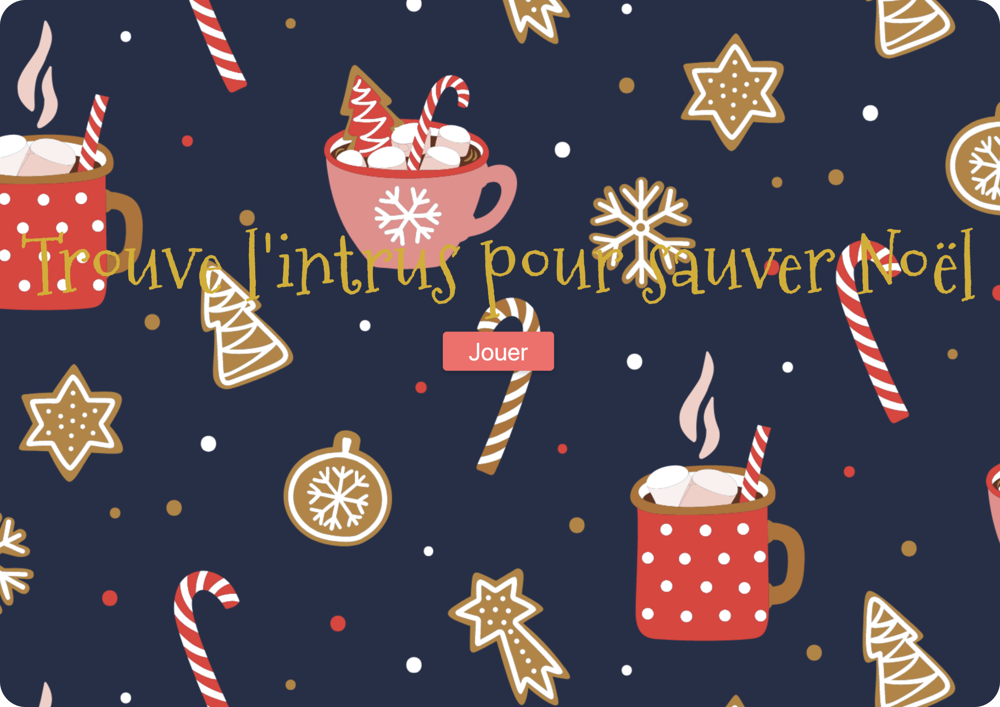

Plongez dans l'univers de Sauver Noël
Sauver Noël est un jeu plein de suspense et d’amusement où votre mission est claire : protéger les fêtes ! Sur un plateau de 64 cases, 63 dissimulent Mariah Carey prête à chanter All I Want for Christmas Is You. Mais quelque part, le Grinch se cache, prêt à ruiner Noël. Votre objectif : le trouver et l’enfermer avant qu’il ne soit trop tard. Si vous échouez, Noël sera gâché ! À vous de jouer pour préserver la magie des fêtes ! 🎄✨
